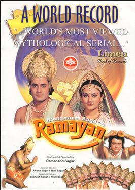
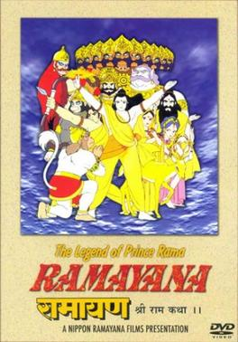

Ramayana (Sanskrit: रामायणम्, Rāmāyaṇam) is one of the two major Sanskrit epics of ancient India, the other being the Mahābhārata. Along with the Mahābhārata, it forms the Hindu Itihasa. The epic, traditionally ascribed to the Maharishi Valmiki, narrates the life of Rama, the legendary prince of the Kosala Kingdom . It follows his fourteen-year exile to the forest by his father King Dasharatha, on request of his step-mother Kaikeyi. His travels across forests in India with his wife Sita and brother Lakshmana, the kidnapping of his wife by Ravana, the great king of Lanka, resulting in a war with him, and Ram's eventual return to Ayodhya to be crowned king. This is the culmination point of the epic. It is the most sacred book, and is read by millions of people every year.
| Family of Ram | Alies of Ram | Foes of Ram |
|---|---|---|
| King Dasharatha | Shri Hanuman | King Ravana |
| Mother Kausalya | Sugriva | Indrajit/Meghnadha |
| Mother Kaikeyi | Angada | Kumbhakarna |
| Mother Sumitra | Nala and Neel | Shurpanakha |
| Bharata | Jambavan | Ahiravan |
| Lakshmana | Jatayu and Sampati | |
| Shatrughan | ||
| Mata Sita |
Most Famous TV Series |
Most Famous Animation Movie |
|---|---|
|  |  |
Genre: Historical |
Genre: Historical |
Created By: Ramanand Sagar |
Directors: Yugo Sako, Ram Mohan, Koichi Saski |
IMDB: 9.3 |
IMDB: 8.9 |
Country of origin: India |
Country of origin: Japan, India |
| Release Date: 1987-1988 | Release Date: 1992 |
More about Ramayana book wikipedia
More about Ramayan (1987 TV Series) wikipedia
More about Ramayana: The Legend of Prince Rama (Animation) wikipedia
Most popular Ramayana movies and TV shows IMDb
For Buying: Book